NEWS LETTER
|
2008.2.14 THU
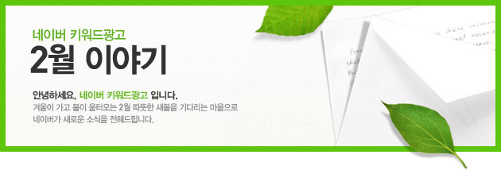
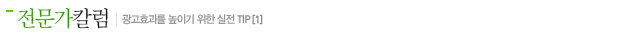
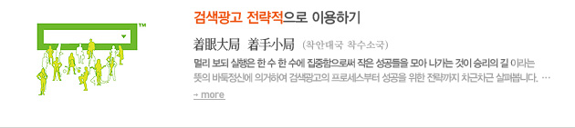
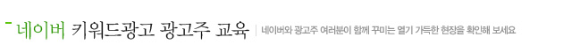
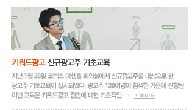
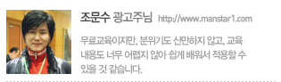
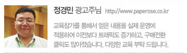
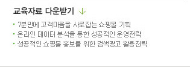
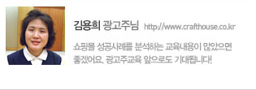
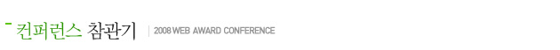
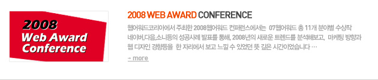
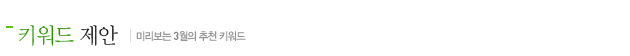
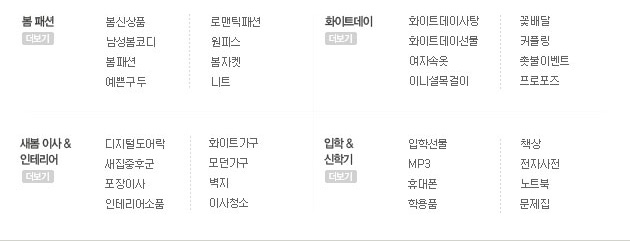
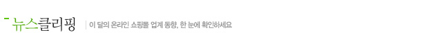
2008년 美광고시장, 온라인 비중 18%까지 증가
블로터닷넷,2008-01-02
성공노하우 : 통통 여성의 틈새 시장을 공략하라
이데일리,2008-01-02
쥐띠해 "쥐 캐릭터 상품 " 및 "결심도우미 제품" 봇물
한겨레,2008-01-01
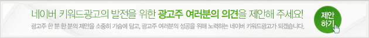
본 메일은 2007년 9월 18일 기준 메일수신동의를 하신 회원님께 보내는 안내 메일입니다.
이는 발신전용이며 회신되지 않으므로
고객센터
를 눌러서 문의 해 주세요.
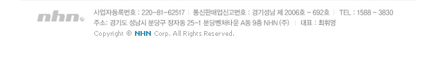